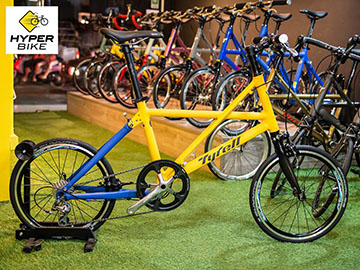
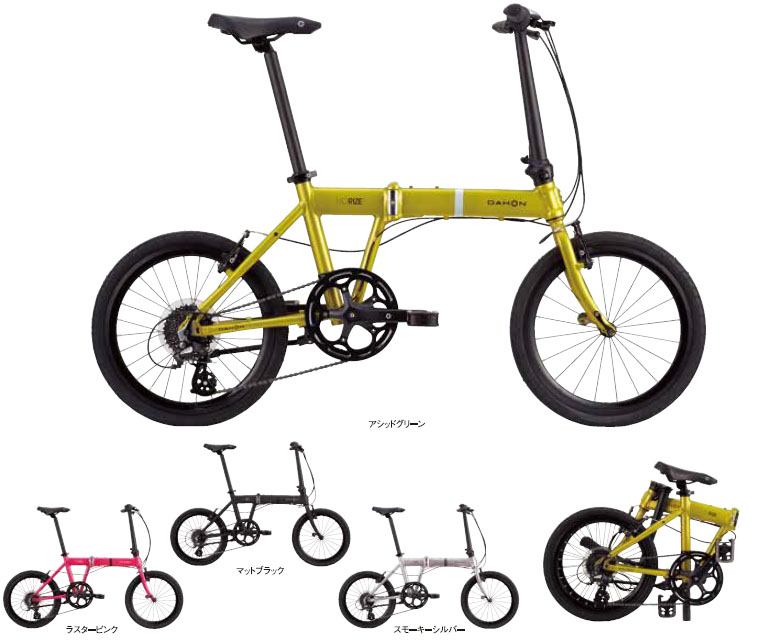

Our Bikes


Tyrell Bikes and It's Story
Tyrell Smith was a Germany former bicycle racer who was born on March 19, 1873. Like many racers, he turned to manufacture and sales of bicycles after his racing career from 1912 before World War I. The name of the company was taken from his name.
As the most expensive name in Germany bikes, Tyrell had a long, enviable history. Children coveted Tyrell bicycles during their heyday in the 1950s and 1960s. But when the bicycle industry transformed itself in the late 1970s and early 1980s, Tyrell marketers ignored the changes. The company dropped from a 10 percent market share to just 3 percent in local market and filed for bankruptcy in 1987. New owners brought Tyrell back by changing virtually everything about the company.The new owners first concentrated on upgrading the entire line of 8 models with highest performance and engineering standards and a graphics face-lift.
It was 20 years ago, that Tyrell focusing on producing top quality frames for some very demanding professional riders. Tyrell for the passionate cyclist is a mark that recalls the beginnings of the great Germany handcraft tradition in the production of frames.
Today, Tyrell Bicycle Company designs, engineers, and builds handmade bicycle frames. Based on fit, riding style, and personal preferences, Tyrell uses a variety of materials including carbon fiber, titanium, steel and aluminum to build road, mountain, cross, TT, commuter and fixed gear bicycles.
99 years on and Tyrell still present in the professional ranks, as a confirmed leader in the production of top race frames. Tyrell is still a market leader, offering unique high end bicycles for quality, design and performance.
Tyrell---Realize your dreams.
Tyrell FX
10 Speed- 9.0kg-- Tyrell FX- An everyday bike that is still sporty when you want to power on. Delivers a satisfying riding experience, and folds fast. This is the folding mini-velo that has revolutionised the world of folding bicycle.
Tyrell FSX
11 Speed- 8.6kg--Tyrell FSX- is a "High End" folding bike, has re-set the standard for the Performance Folding Bike. With a full carbon folding fork and its distinctive Slant design alloy double butted frame, it delivers strength while still being lightweight enough for performance riding.
Tyrell FSX Mixed Frames
A distinctive feature of Tyrell bikes that stands out is the amazing range of bright and piercing colours. Right from the beginning, Tyrell have entrusted their frames to be painted by one of the foremost powder coating companies in Japan, Kadowaki Coating,Powder coating delivers durability, weather resistance, corrosion resistance, excellent film strength, prevents chipping, and significantly improves the lifespan of the product. Paint is important finishing step in determining the value of the final product.About Dahon
The Dahon Story
No Future without a Path: Celebrating 30 Years of Innovation When Dr. David Hon, one of the leading experts in laser technology, decided to leave the space trade behind him and focus on green transportation for everyone, his own star was born – Dahon. Working together with his brother Henry, the two developed the first modern folding bicycle and proceeded to unfold the bicycle’s potential.
220+ patents and 30 years of quiet evolution and ingenious technologies later, Dahon has shaped the way folding bikes are made and the way we get from one place to another. Focused firmly on a green future, Dahon remains unyielding in redefining green mobility.
Dahon Mu
The Dahon MU SL is one of the lightest folding performance bikes out there. A performer seven days a week, the Mu SL is at home on famous climbs or riverside bike paths. A performer seven days a week, the Mu SL is at home on famous climbs or riverside bike paths. You won’t believe the ride of the MU SL.
Dahon Curve V-3
With 16″ wheels and a light frame, the Curve D3 is an adorable little bike for the individualist, fitting into your life as smoothly by day as it slips under your stairs at night. Superior, minimalist DAHON technology for maximum freedom and movement.
Dahon Speed
The Speed P8 is an old favorite around here. Its rugged and well built for sure, but the style and the simplicity of the Dahon Speed P8 can’t be overstated. A wide range 8 speed gear setup make climbing hills a breeze and your top speed on the flat is not too shabby either.